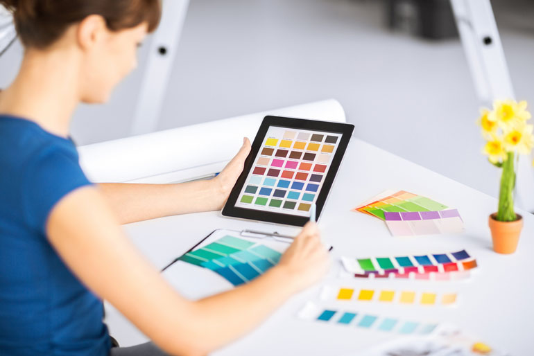

DI MULTI MEDIA KAMI MEMPELAJARI PEMROGRAMAN,DESAIN GRAFIS,dan KOMPUTER JARINGAN DASAR

APA ITU DESAIN GRAFIS
Desain grafis adalah salah satu bentuk seni lukis untuk menciptakan atau mengatur elemen rupa seperti ilustrasi, foto, tulisan, dan garis di atas suatu media.
Hal ini ditujukan untuk diproduksi dan dikomunikasikan sebagai sebuah pesan.
Bentuk-bentuk dari seni desain grafis ini dibuat oleh graphic designer yang memiliki spesialisasi untuk mengintepretasikan pesan melalui bentuk gambar.
Dengan kata lain, seorang graphic designer merupakan seorang komunikator visual yang menciptakan konsep visual secara manual atau dengan menggunakan software komputer.
Mereka mengomunikasikan ide-idenya untuk menginspirasi dan menginformasikan sebuah pesan lewat seni viual yang termasuk gambar, tulisan, dan juga grafik.
Dilansir dari International Design School, ada beberapa keuntungan menjadi graphic designer. Di antaranya adalah:
1. Berekspresi secara artistik
Salah satu keuntungan bekerja di bidang desain grafis adalah kamu dapat menuangkan ide dan konsep kreatif untuk divisualisasikan ke dalam sebuah media.
Maka dari itu, setiap hasil karya dari graphic designer pastinya akan berbeda dan memiliki ciri khas masing-masing. Sama seperti dengan karya seni lainnya, desain grafis bersifat sangat subjektif.
Namun, jangan sampai kamu takut untuk berekspresi. Walaupun di lingkungan kantor ada brief yang jelas mengenai apa saja yang harus kamu kerjakan, jangan sampai itu membatasi kreativitasmu.
Berekspresilah sesuai dengan selera, namun juga harus tetap mampu beradaptasi.
2. Kesempatan kerja yang tidak terbatas
Di era digital ini, hampir semua brand akan mempromosikan diri baik secara offline maupun online.
Untul menarik perhatian konsumen, tentu saja salah satu caranya dengan mengomunikasikan campaign mereka lewat visual.
Hal itu meliputi desain website, packaging, banner, flyer, logo, sampai juga konten di media sosial.
Maka dari itu, lowongan pekerjaan sebagai graphic designer sangat luas dan hampir semua perusahaan membutuhkannya.
3. Fleksibilitas dalam memilih lingkungan kerja
Keuntungan lainnya dalam bekerja di bidang desain grafis adalah fleksibilitas dalam memilih lingkungan kerja.
Bagaimana bisa? Sekarang ini misalnya sudah banyak sekali designer yang memutuskan untuk freelance.
Menawarkan jasa desain grafis melalu internet bukanlah hal yang sulit di era digital sehingga kamu bisa mengerjakannya di mana saja, kapan saja, bahkan bisa menjadi salah satu kerja sampingan.
Tak hanya itu, jika kamu ingin bekerja menjadi desainer di kantor baik di agensi maupun in-house, tentu saja kesempatan juga terbuka sangat lebar.
4. Menghemat budget
Jika kamu telah memiliki perangkat komputer atau laptop dan software yang dibutuhkan untuk mendesain maka kamu tidak perlu mengeluarkan uang dengan jumlah yang besar.
Minimnya jumlah uang yang dihabiskan tentu memberikan keuntungan finansial yang lebih besar.
Hal ini terutama jika seorang graphic designer memilih untuk menekuni profesi ini dengan basis freelance.
Dengan langkah self-marketing yang baik, maka kamu bisa dengan cepat mendapatkan pekerjaan pertamamu di dunia desain grafis.